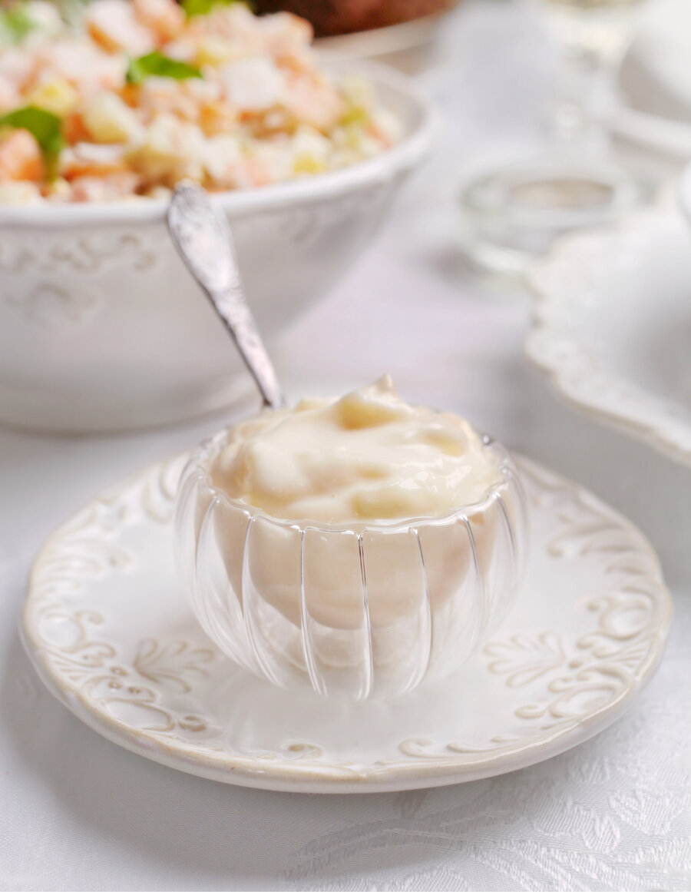

Поверьте, приготовить майонез вручную совсем не сложно. Главное — понять принцип и не добавлять масло слишком быстро. У меня весь процесс занимает несколько минут.
Можно сделать майонез на одном желтке, используя 150–200 мл масла. Облегченный вариант соуса: добавьте в готовый майонез 100 г натурального йогурта, нежирной сметаны или крем-фреша.